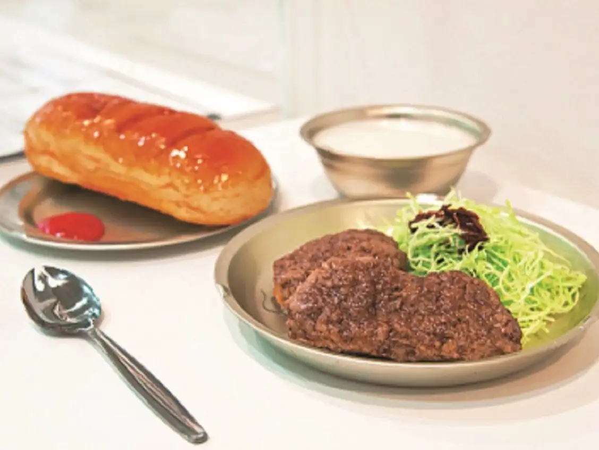
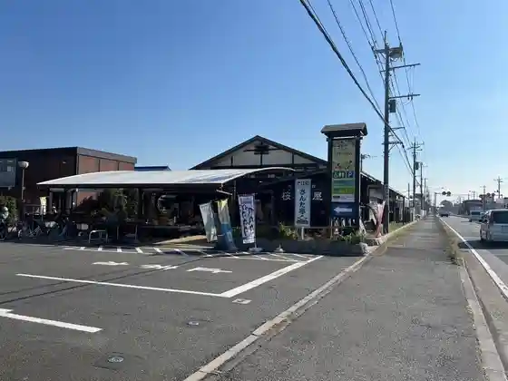
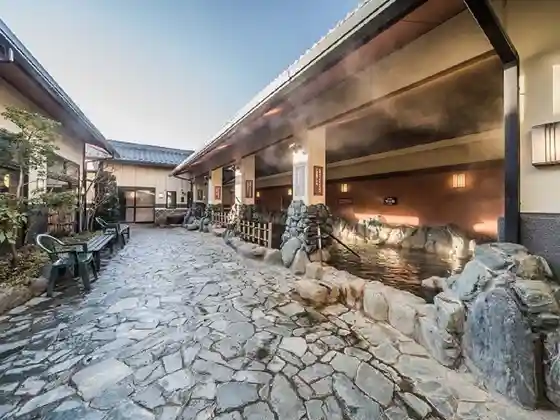
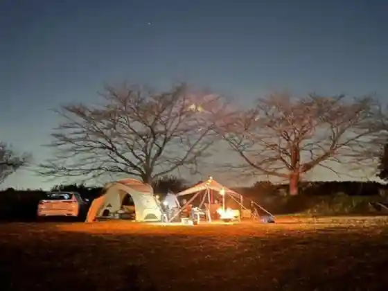

Japan / Saitama / Kitamoto
Kitamoto
Kitamoto · Saitama
Kitamoto
Highlighted on the Saitama map.

Sights
Gakkokyushoku Rekishikan
Kitamoto, Saitama · 048-592-2115 · Official / source link
Gurikopia Iisuto
Kitamoto, Saitama · 048-593-8811 · Official / source link
Kitamoto (Shiki no Megumi) Marushie (Kitamoto Nogyo Fureai Center)
Kitamoto, Saitama · 048-544-5321 · Official / source link

Kitamoto Onsen Yu Raku Village
Kitamoto, Saitama · 048-590-4126 · Official / source link

San'amenitei Kitamoto Kyanpufiirudo (Kitamoto Yagaikatsudo Center)
Kitamoto, Saitama · 048-593-0008 · Official / source link

Saitamaken Shizengaku Shu Center
Kitamoto, Saitama · 048-593-2891 · Official / source link
Saitama Yoho
Kitamoto, Saitama · 048-541-3420 · Official / source link
Hikawa Shrine
Kitamoto, Saitama · 048-592-0821 · Official / source link
Kitamoto Tourism Association
Kitamoto, Saitama · 048-591-1473 · Official / source link
Shirogatani Tsutsumi
Kitamoto, Saitama · 048-594-5566 · Official / source link